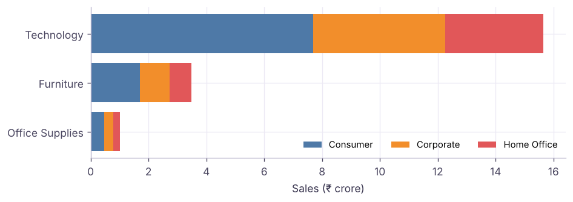

Charts in Tableau: From Bar and Line to Maps, Dual Axis, Histograms and Pareto
Build every core chart in Tableau and know when to use each: bar, stacked and side-by-side bars, line and area, pie and donut, treemap, highlight table, scatter plot, histogram with bins, box plot, filled and symbol maps, dual-axis combo charts, bullet charts and a Pareto chart, all on the Superstore India data.
✦ Tableau Desktop / Tableau Public 2026Beginner⏱ 150 min
All examples below use the Superstore India data. The tables show the numbers your Tableau view should display, computed here with pandas so you can check your work.
Second dimension on Columns before the measure (or Show Me → side-by-side)
Comparing subgroups directly
100% stacked
Stacked bar + Quick Table Calculation → Percent of Total (compute using the colour dimension)
Mix comparisons
Python
seg = pd.crosstab(df.category, df.segment, values=df.sales, aggfunc="sum") / 1e7
seg.round(2)
Output
segment
Consumer
Corporate
Home Office
category
Furniture
1.70
1.03
0.75
Office Supplies
0.47
0.32
0.23
Technology
7.69
4.56
3.39
3 rows × 3 columns

Stacked bar: Sales by Category, coloured by Segment (₹ crore).
Line and area charts
Put a continuous date (green MONTH(Order Date)) on Columns and Sales on Rows for one timeline. Put YEAR on Color and a discrete MONTH on Columns to compare the same months across years (seasonality).
Discrete month on Columns, Year on Color: each year is a line, so seasonality is easy to compare.
An area chart is the same view with Mark type = Area; stack a dimension on Color to show how the total is built up.
Part-to-whole: pie, donut, treemap
Pie: Mark type Pie, dimension on Color, measure on Angle. Use for 2–5 slices only.
Donut: two pies on a dual axis. Put AVG(0) (type avg(0) on Rows) twice, make the second smaller and white, turn on dual axis, and put the total on the inner label.
Treemap: dimension on Detail/Label, measure on Size and Color. Good for many categories (e.g. the 13 sub-categories).
Category on Rows, YEAR on Columns, Sales on Text and Color, Mark type Square. Tableau shades each cell, so high and low cells stand out without reading every number.
Distribution: histogram and box plot
Step by stepHistogram of order value
Right-click Sales → Create → Bins; set the bin size (e.g. ₹10,000). A new dimension "Sales (bin)" appears.
Drag Sales (bin) to Columns and CNT(Sales) (or Number of Records) to Rows.
Or select Sales and pick the histogram in Show Me: it creates the bins for you.
The mean is well above the median: a few large orders pull it up (right skew). A box plot (Show Me → box-and-whisker) shows the median, quartiles and outliers per category at a glance.
Relationship: scatter plot
Put SUM(Sales) on Columns, SUM(Profit) on Rows and Sub-Category on Detail: one dot per sub-category. Add Analytics pane → Trend Line (linear) and hover it to read R² and the p-value.
Python
s = df.groupby("sub_category")[["sales", "profit", "discount"]].agg({"sales": "sum", "profit": "sum", "discount": "mean"})
print("correlation sales vs profit across sub-categories:", round(s.sales.corr(s.profit), 2))
print("correlation avg discount vs profit margin:", round(s.discount.corr(s.profit / s.sales), 2))
Output
correlation sales vs profit across sub-categories: 0.95
correlation avg discount vs profit margin: -0.88
Maps
Make sure State has the geographic role State/Province (and the country is India: Map → Edit Locations).
Double-click State: Tableau adds Latitude/Longitude (generated) and draws a symbol map. Change Mark type to Map for a filled (choropleth) map.
Put Sales on Color for a filled map, or on Size for a symbol map. Use Profit on Color with a diverging palette (orange-blue) to show loss-making states.
Python
st = (df.groupby("state")[["sales", "profit"]].sum() / 1e5).round(1).sort_values("sales", ascending=False)
st.head(6)
Output
sales
profit
state
Maharashtra
256.7
24.4
Delhi
156.6
17.3
Kerala
147.1
12.6
Madhya Pradesh
144.1
12.7
West Bengal
138.9
14.6
Karnataka
136.3
11.8
6 rows × 2 columns
TipIndian maps
Tableau's built-in geocoding knows Indian states and many districts and cities. If a name does not match (old spellings, "Orissa" vs "Odisha"), use Map → Edit Locations to match it, or join a custom latitude/longitude file.
Dual-axis and combo charts
Show two measures with different scales, e.g. Sales as bars and Profit margin as a line:
Continuous MONTH(Order Date) on Columns; SUM(Sales) and the margin calculation on Rows.
Right-click the second pill → Dual Axis. Set the Marks card for Sales to Bar and for margin to Line.
Right-click the right axis → Synchronize Axis only when both measures share units (Sales and Profit); never synchronise ₹ with %.
A blended axis (drag a second measure onto the existing axis until the double-ruler icon shows) puts two measures with the same unit on one axis, using Measure Names on Color.
Bullet chart (actual vs target)
Select a measure and a target (e.g. Sales and a target field) → Show Me → Bullet graph. The bar is the actual, the reference line is the target, and the shaded bands are % of target (60%, 80%). If the bars and lines come out the wrong way round, right-click the axis → Swap Reference Line Fields.
Pareto chart (80/20)
Step by stepBuild a Pareto of products
Product Name on Columns sorted by SUM(Sales) descending; SUM(Sales) on Rows as bars.
Drag SUM(Sales) to Rows again → Quick Table Calculation → Running Total, then Edit Table Calculation → Add secondary calculation → Percent of Total.
Make it dual axis; set the second mark to Line; add a reference line at 80%.
Optional: replace Product Name on Columns with a table calc INDEX()/SIZE() so the x-axis reads "% of products".
Python
p = df.groupby("product_name").sales.sum().sort_values(ascending=False)
cum = p.cumsum() / p.sum()
n80 = int((cum < .8).sum()) + 1print(f"{n80} of {len(p)} products ({n80 / len(p):.0%}) make 80% of sales")
Output
21 of 78 products (27%) make 80% of sales
Sales are concentrated: about a quarter of the products bring in 80% of sales, close to the classic 80/20 rule. Those top products deserve the best stock availability and marketing. A Pareto chart shows how concentrated a business really is, so you can judge whether a "focus on the top products" strategy makes sense.
Summary
Key takeaways
Pick the chart from the question: compare, trend, part-to-whole, distribution, relationship, geography.
Bins create histograms; the Analytics pane adds trend lines, reference lines and box plots.
Assign geographic roles before mapping; use filled maps for rates and symbol maps for totals.
Dual axis combines two marks (bar + line); synchronise only when units match.
Quick quiz6 questions · tap an answer to check it
1. Which chart best shows how a single order-value variable is distributed?
Answer: A. Histograms show distributions; create bins first.
2. How do you get Profit as a line on top of Sales bars with its own scale?
Answer: A. Dual axis gives two independent axes and separate mark types.
3. Which is the right way to show 13 sub-categories as a part-to-whole?
Answer: A. Pies stop being readable beyond about five slices.
4. You want each year as its own line to compare seasonality. What goes on Columns?
Answer: A. Discrete month gives Jan–Dec headers; Year goes on Color.
5. What does the Pareto line show?
Answer: A. Running total + percent of total secondary calculation.
6. When should you synchronise a dual axis?
Answer: A. Synchronising ₹ with % distorts the chart.
ExercisePractice
Build: (1) a side-by-side bar of Sales by Region and Segment; (2) a filled map of Profit by State with a diverging palette; (3) a histogram of Sales with ₹10,000 bins; (4) a dual-axis chart of monthly Sales (bars) and Profit (line); (5) a Pareto chart of sub-categories with an 80% reference line.
Show solution
Use the steps in each section. For the map, set Profit on Color → Edit Colors → Orange-Blue Diverging, centre 0. For the Pareto use Running Total + Percent of Total, compute using Sub-Category, then Analytics → Reference Line → Constant 0.8 on the line axis.
Interview cornerQuestions you may be asked
Q: Dual axis vs blended axis?
A dual axis gives two independent axes (left and right) and allows different mark types; a blended axis puts several measures on one shared axis (same unit) using Measure Names/Values.
Q: How do you build a Pareto chart in Tableau?
Sort the dimension by the measure, show bars, add the measure again with a Running Total table calculation and a secondary Percent of Total, make it dual axis as a line, and add an 80% reference line.
Q: Filled map or symbol map?
Filled maps suit rates and ratios (profit margin by state) because area does not scale with value; symbol maps with size suit totals (sales by city).
Practise more online
Free, trusted places to test yourself on this topic. Links open the original site in a new tab.